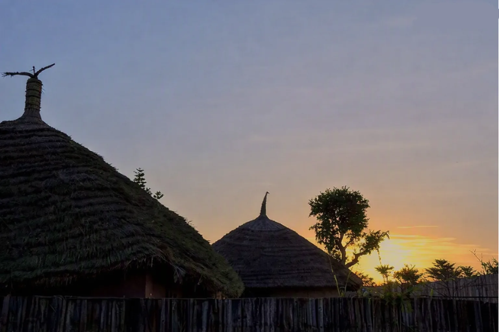

NDIAGANIAO · SÉNÉGAL
Bienvenue aux
Gîtes Éco-Touristiques
Mbind Sereer
Une maison Sérère, une histoire à vivre, une culture à découvrir.
Une escale authentique
au cœur du pays Sérère.
Mbind Sereer, pouvant se traduire par « la maison Sérère », est un site touristique au cœur du village de Ndiaganiao. Son objectif est de promouvoir et d’étendre la culture Sérère au-delà de ses frontières.
Les Gîtes Éco-Touristiques Mbind Sereer vous proposent des logements confortables dans une ambiance traditionnelle, des activités culturelles telles que chants et danses Sérères, des visites autour du village et des lieux sacrés, ainsi que des plats locaux préparés à base de plantes naturelles.
Plus qu'un séjour : une rencontre avec un territoire, ses traditions et ses habitants.
Nos chambres
Une chambre chaleureuse inspirée de l'architecture traditionnelle locale. Cliquez sur une image pour découvrir l'espace et l'agrandir.
Chambre Mbind Sereer
Un séjour au plus près de l'identité du village, pour les voyageurs qui recherchent calme, authenticité et découverte culturelle.
- ✦ Ambiance traditionnelle
- ✦ Espace repos confortable
- ✦ Expérience culturelle locale
La table Mbind Sereer
Découvrez les saveurs traditionnelles de Mbind Sereer, organisées par familles de plats.
Activités & expériences
Découvrez les expériences culturelles et les moments à vivre à Mbind Sereer.
Le Festival
Mbind Sereer
Chaque année, Mbind Sereer organise son Festival annuel pour renforcer le savoir et la pratique de sa culture, afin de montrer au monde la beauté de l’héritage ancestral.
Lay Tokk Fopp a nan, Parler Fort a Profit de Tous!
Découvrez l’ambiance du Festival Mbind Sereer en vidéo, puis explorez les souvenirs en images.
Quelques moments capturés au cœur de la célébration.
Galerie Mbind Sereer
20 photos de Mbind Sereer — des souvenirs, des paysages et des moments de vie.
Réservez votre
expérience.
Le formulaire calcule automatiquement la durée. Votre demande est envoyée directement à l'e-mail officiel de Mbind Sereer.
Contactez Mbind Sereer
Pour les réservations, utilisez le formulaire ci-dessus ou écrivez-nous à l'adresse officielle.